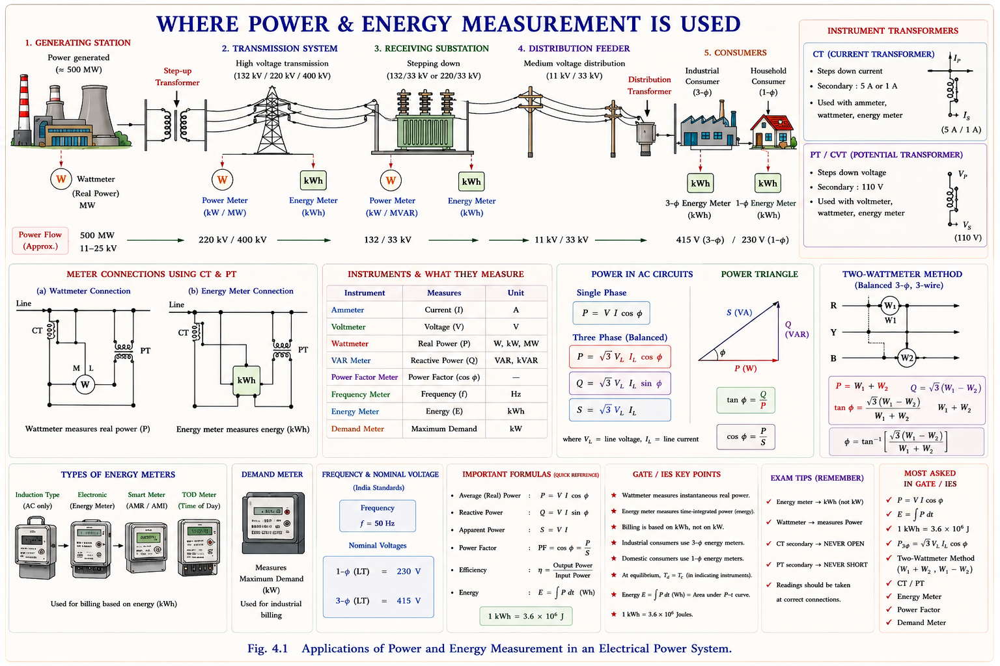
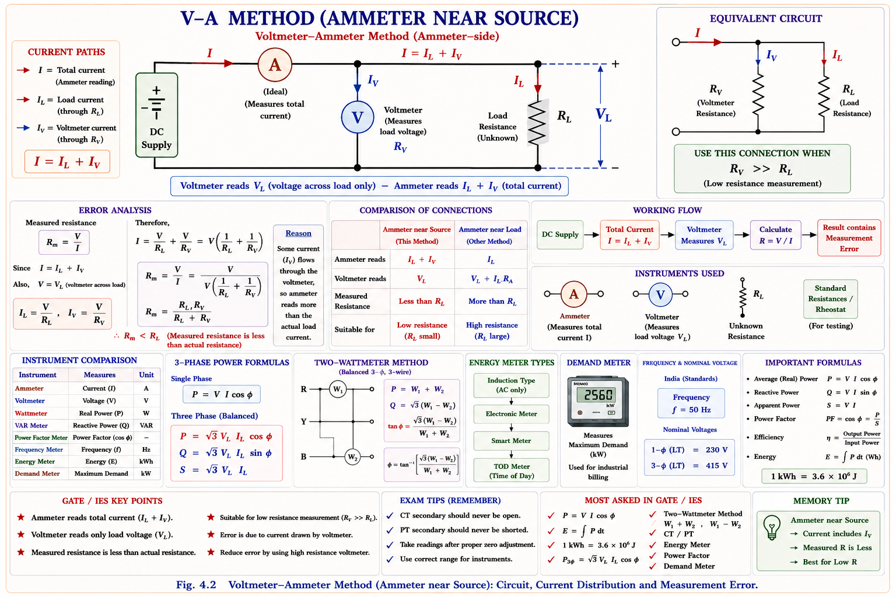
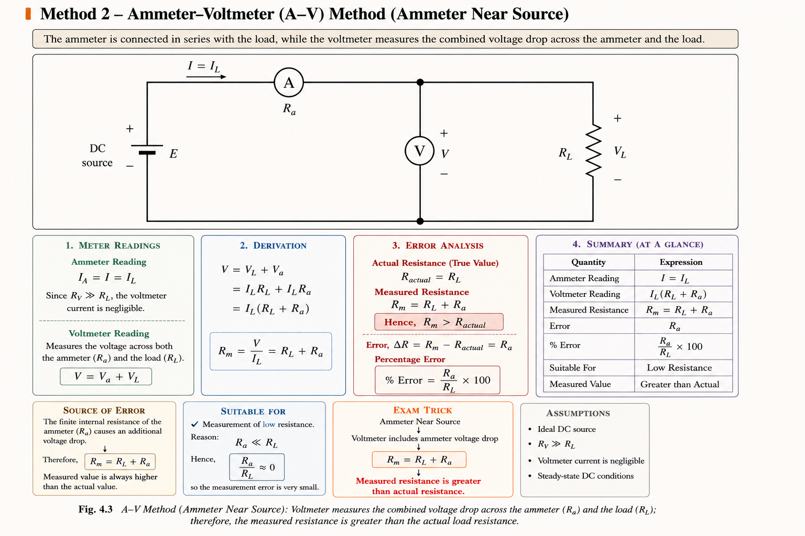
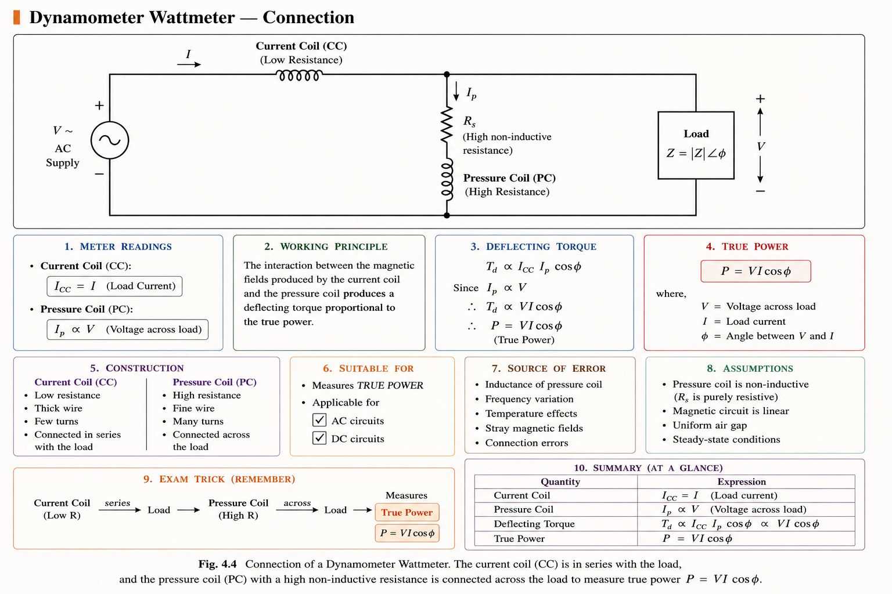
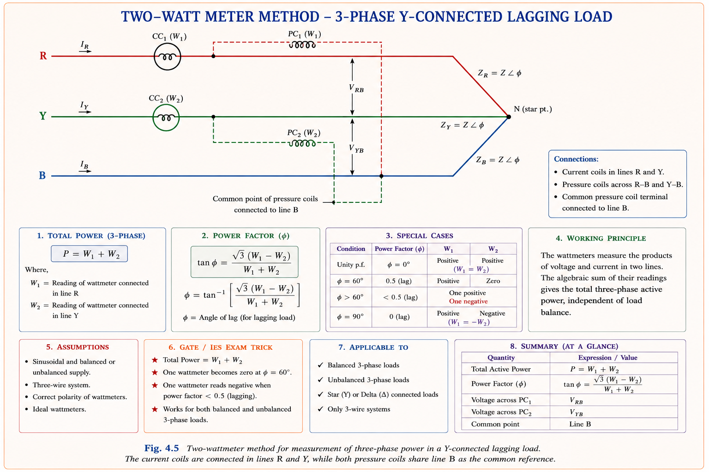
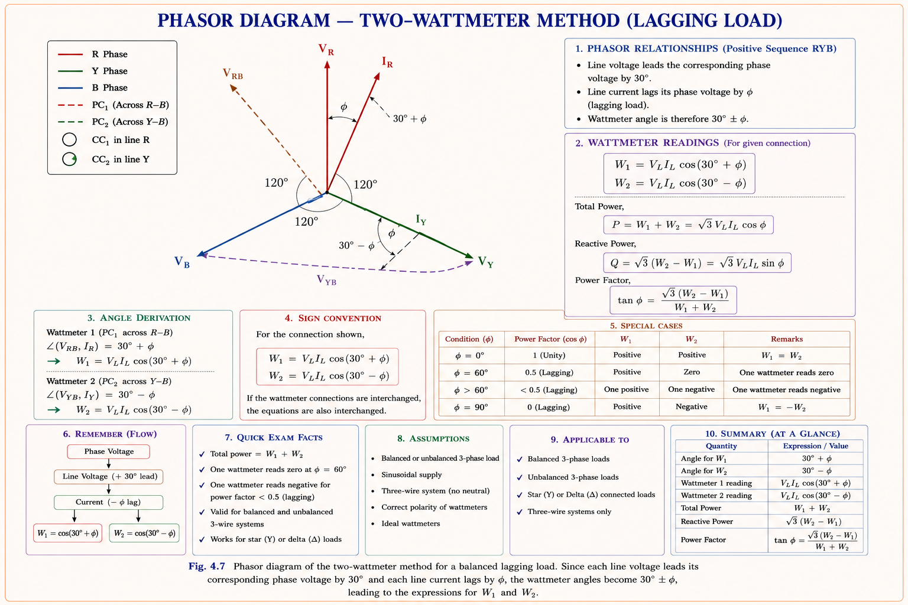
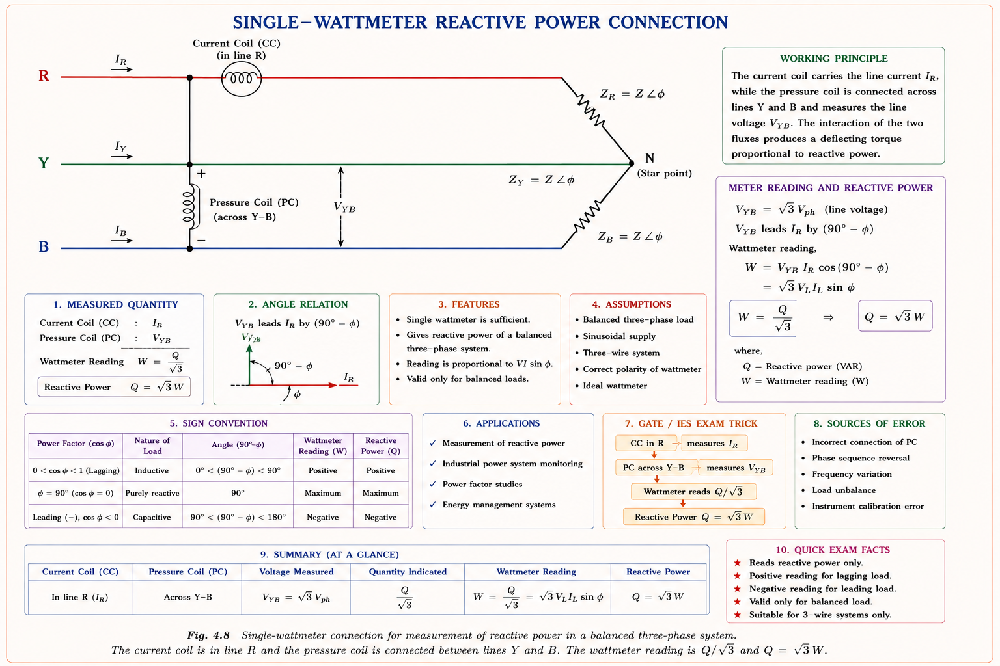
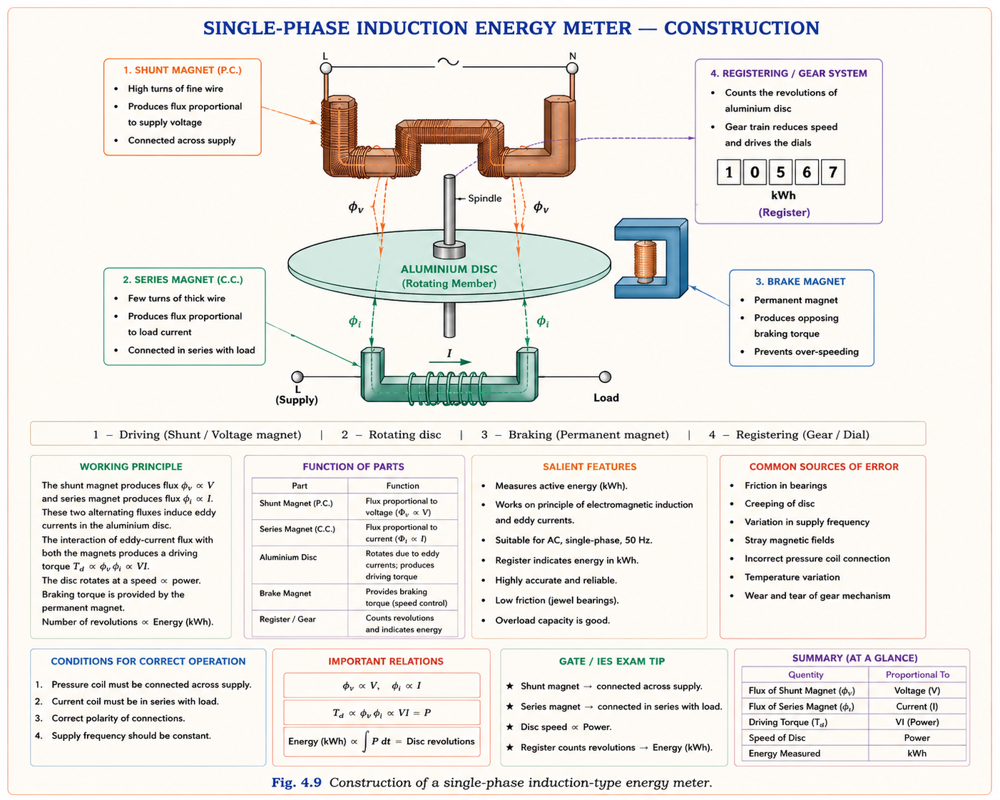
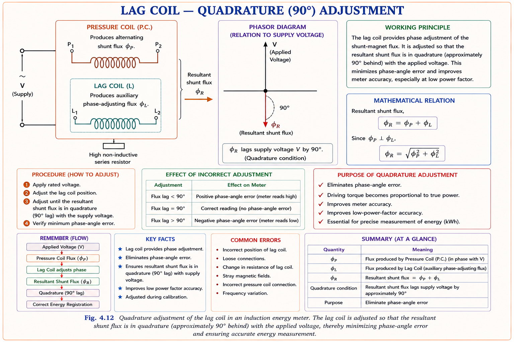
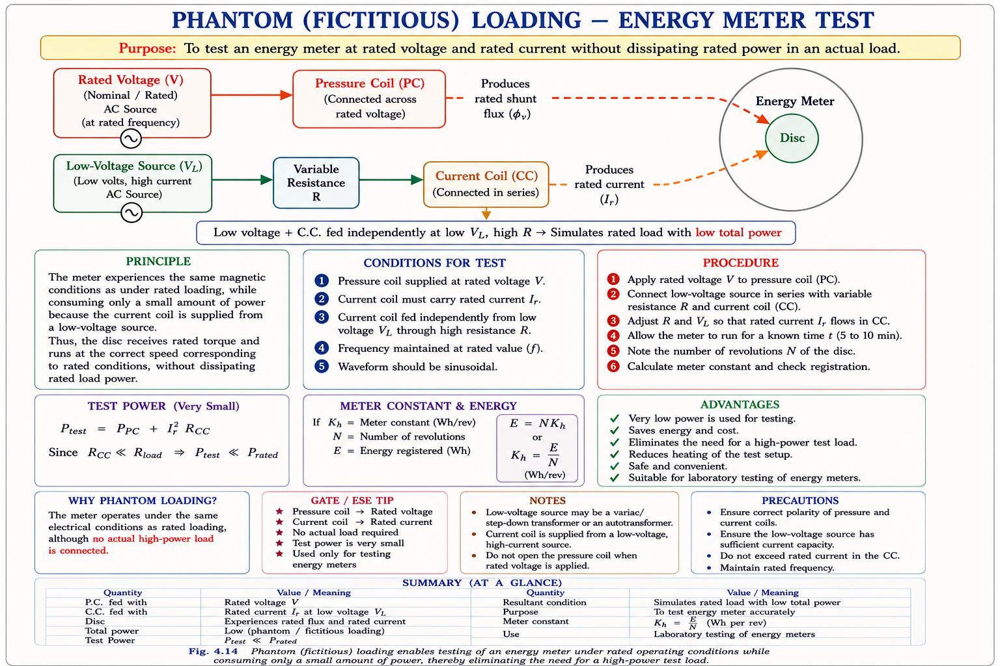

Measurement of DC and AC power, the dynamometer wattmeter, two-wattmeter method for three-phase power and power factor, reactive power measurement, and the induction-type single-phase energy meter — complete theory, derivations, errors, testing methods, and GATE/IES exam concepts.
Every electrical installation — from a household to a 765 kV substation — needs to answer two practical questions: how much power is being consumed right now, and how much energy has been consumed over a billing period. The first question is answered by a wattmeter; the second by an energy meter (the familiar "electricity meter" outside every home). Power and energy measurement is therefore the bridge between the physics of electrical circuits and the commercial/operational world of utilities, industries, and consumers.
Power is an instantaneous quantity (P = VI cosφ at any instant), while energy is power integrated over time (E = ∫P·dt). A wattmeter answers "how fast am I consuming?" while an energy meter answers "how much have I consumed in total?" — the same relationship as speed and distance travelled.

For a pure resistive DC load, power is simply P = VI — the product of voltage across the load and current through it. The catch is that both the voltmeter and the ammeter are themselves circuit elements with finite resistance, so wherever they are connected they consume a small amount of power and disturb the very quantity being measured. This unavoidable disturbance is the central theme of this section.
Think of measuring the speed of a runner by having them carry a small backpack (the meter). The backpack itself slightly changes the runner's natural speed. Similarly, an ammeter placed in series adds its own resistance to the circuit, and a voltmeter placed in parallel draws a small current of its own. Depending on where we place these meters, one or the other effect dominates the reading — this gives rise to two connection methods.
In this arrangement the ammeter is connected directly in series with the load, and the voltmeter is connected across the series combination of the ammeter and the load.

Here the voltmeter reads the true load voltage V_L, but the ammeter reads I_L + I_V — the load current plus the small current drawn by the voltmeter itself. The power computed from the meter readings is therefore:
P_m > P_true; the error is entirely due to the voltmeter (the extra term V_L·I_V). This connection is therefore suitable when the voltmeter current is negligible compared to the load current — i.e. for low-resistance, high-current loads.
Here the positions are swapped: the voltmeter is connected directly across the parallel combination of the ammeter and the load, while the ammeter is placed in series with only the load.

Here the ammeter reads the true load current I_L, but the voltmeter reads V_L + V_a, where V_a = I_L·R_a is the voltage drop across the ammeter's own resistance R_a.
\(P_m > P_{true}\) again, but now the error term is \(I_L^2R_a\) — the power loss in the ammeter coil. The error is entirely due to the ammeter. This connection is therefore suitable for high-resistance, low-current loads, where \(I_L^2R_a\) is negligible compared to \(V_L \cdot I_L\).
| Method | Ammeter Reads | Voltmeter Reads | Error Source | Suitable For |
|---|---|---|---|---|
| V-A (Ammeter side) | \(I_L + I_V\) | \(V_L\) (true) | Voltmeter (extra current \(I_V\)) | Low resistance, high current loads |
| A-V (Voltmeter side) | \(I_L\) (true) | \(V_L + V_a\) | Ammeter (drop \(I_L \cdot R_a\)) | High resistance, low current loads |
Students often try to remember "which method is which" by name alone, leading to confusion. The reliable approach: identify which meter is placed so that it reads only the load quantity (true value) — that meter's "partner" meter is the one carrying the error. In the V-A method, the voltmeter reads true \(V_L\), so the ammeter carries the extra current — hence error is "due to voltmeter" (its current adds to the ammeter reading). Always derive from the circuit; do not memorise blindly.
There exists a critical load resistance, the geometric mean of voltmeter resistance \(R_v\) and ammeter resistance \(R_a\), i.e. \(R_L = \sqrt{R_v \cdot R_a}\), at which both connections produce the same percentage error. For \(R_L\) greater than this value, the A-V method is more accurate; for \(R_L\) less than this value, the V-A method is more accurate. This is a favourite conceptual GATE/IES question.
For AC circuits with resistive, inductive and capacitive (R-L-C) loads, power is no longer simply VI — it depends on the phase angle φ between voltage and current: P = VI cosφ. A simple voltmeter-ammeter combination cannot give this directly because neither instrument is sensitive to phase. The instrument that directly multiplies instantaneous voltage and current — and therefore naturally produces VI cosφ — is the electrodynamometer (dynamometer-type) wattmeter.
A dynamometer wattmeter has two coils: a fixed current coil (CC), connected in series with the load (carries current I, low resistance, like an ammeter coil), and a movable pressure/potential coil (PC), connected across the load (carries a current proportional to voltage V, like a voltmeter coil, made highly resistive with a series multiplier). The deflecting torque on the moving coil is proportional to the product of the two coil currents — and because one is proportional to V and the other to I, with the time-average naturally extracting the cosφ term, the steady deflection is proportional to VI cosφ — i.e. true power.

For polyphase circuits, the general principle is Blondel's Theorem: if a system has n conductors, the total power can be measured using (n − 1) wattmeters, with the current coils in any (n − 1) lines and the pressure coils connected between the corresponding line and a common reference line (the one without a current coil).
For an n-wire system, (n − 1) wattmeters are sufficient and necessary to measure the total power, irrespective of balance or load connection — as long as all current coils are in different lines and all pressure coils share a common point on the line that has no current coil.
For a standard 3-phase, 3-wire system (n = 3), this gives 2 wattmeters — the celebrated two-wattmeter method. It works for balanced or unbalanced loads, and whether or not a neutral is present, as long as only 3 wires carry power.
Consider a 3-phase, Y-connected, balanced lagging power-factor load with phase sequence R-Y-B. The current coils of the two wattmeters are placed in lines R and Y, and the common point of both pressure coils is line B (the line without a current coil).

For a balanced star-connected load with line voltage V_L, line current I_L, and lagging power-factor angle φ, the two wattmeters read:
where V_RB and V_YB are the line voltages used as the pressure-coil voltages, and the angles (30° ∓ φ) arise from the phasor relationship between the line voltages and the line currents — the line voltage phasor leads/lags the corresponding line current by 30° ± φ for a balanced system (this 30° comes from the geometric relationship between line and phase quantities in a star connection).

For a balanced load, V_RB = V_YB = V_L and I_R = I_Y = I_L. Adding the two readings:
This is a remarkable result: the sum of the two wattmeter readings always gives the exact total three-phase active power, regardless of the power factor. In star connection, V_L = √3 V_ph and I_L = I_ph, so P = 3 V_ph I_ph cosφ — the familiar total 3-phase power formula.
Dividing the difference by the sum:
From just two ordinary wattmeter readings, we can extract both total active power and the load power factor — without any additional instrumentation. This is the single most important practical result of three-phase power measurement.
| \(\Phi\) | \(\cos\Phi\) | \(W_1 = V_L I_L \cos(30^\circ - \Phi)\) | \(W_2 = V_L I_L \cos(30^\circ + \Phi)\) | \(W_1 + W_2\) | Observation |
|---|---|---|---|---|---|
| \(0^\circ\) | 1 | \((\sqrt{3}/2) V_L I_L\) | \((\sqrt{3}/2) V_L I_L\) | \(\sqrt{3} V_L I_L\) | \(W_1 = W_2\) |
| \(30^\circ\) | 0.866 | \(V_L I_L\) | \((1/2) V_L I_L\) | \(1.5 V_L I_L\) | \(W_2 = (1/2) W_1\) |
| \(60^\circ\) | 0.5 | \((\sqrt{3}/2) V_L I_L\) | 0 | \((\sqrt{3}/2) V_L I_L\) | \(W_2 = 0\) |
| \(90^\circ\) | 0 | \((1/2) V_L I_L\) | \(-(1/2) V_L I_L\) | 0 | \(W_1 = -W_2\) (one negative) |
For φ > 60°, one wattmeter reading becomes negative — its pointer would try to deflect backwards off-scale. The standard procedure: reverse either the current-coil or pressure-coil connections of that wattmeter, take the reading, and record it with a negative sign in the calculations (e.g. if the reading after reversal is 20 W, use W = −20 W). Forgetting the negative sign is the most frequent numerical error in this topic.
| System | Condition | Min. Wattmeters | Max. Wattmeters |
|---|---|---|---|
| 3-φ, 3-wire | Balanced (I_n = 0), Z₁=Z₂=Z₃, θ₁=θ₂=θ₃ | 2 | 2 |
| 3-φ, 3-wire | Unbalanced | 2 | 2 |
| 3-φ, 4-wire | Balanced | 1 | 3 |
| 3-φ, 4-wire | Unbalanced | 2 | 3 |
For a 3-phase, 4-wire system, the neutral provides a return path; if the neutral conductor is removed or absent for an n-wire system, Blondel's theorem still applies and (n − 1) wattmeters are needed. With the neutral present and the load balanced, even a single wattmeter (placed in one phase, with its pressure coil between that phase and neutral, reading multiplied by 3) suffices.
Reactive power Q = VI sinφ represents the energy that oscillates back and forth between the source and reactive elements (inductors, capacitors) without performing net work. It is essential for voltage regulation studies and for sizing of compensating equipment (capacitor banks, SVCs). A standard wattmeter reads VI cosφ; to read VI sinφ instead, the connection must be modified so that the angle between the coil-current phasors becomes (90° − φ) instead of φ.
The current coil is connected in series with one phase (say phase R), while the pressure coil is connected between the other two phases (Y and B) rather than between phase R and a neutral. This shifts the reference voltage phasor by 90° relative to the normal connection.

For a balanced 3-phase system, V_L I_L sinφ = √3 V_ph I_ph sinφ. Hence the actual single-phase reactive power and the total three-phase reactive power are:
Active power needs the pressure coil "in step" with the current coil's own phase (P.C across same phase to neutral). Reactive power needs the pressure coil "rotated 90°" — connected across the other two phases. Same hardware, different connection, different physical quantity.
Energy is power integrated over time: E = ∫ VI cosφ dt. A wattmeter shows instantaneous power; an energy meter (the familiar domestic "electricity meter") accumulates this over time. The single-phase induction-type energy meter — still the most widely installed meter type historically — is an integrating instrument based on the principle of electromagnetic induction (the same principle as an induction motor).
Picture two electromagnets producing alternating magnetic fluxes that cut through a thin aluminium disc, inducing eddy currents in it. Each flux interacts with the eddy current produced by the other flux to produce a small torque on the disc — much like the rotating field of an induction motor drags its rotor around. The net torque turns out to be proportional to the instantaneous power being consumed by the load. A permanent magnet brake ensures the disc settles at a speed proportional to torque (i.e., to power) rather than accelerating indefinitely. Counting revolutions over time then gives energy.
An induction-type single-phase energy meter consists of four main parts:

The potential coil flux φ_p induces an eddy voltage e_p (and eddy current I_ep) in the disc; the current coil flux φ_c induces an eddy current I_ec. Each flux interacts with the eddy current produced by the other flux to produce a torque component. The two resulting torques, T_d1 and T_d2, act in the same rotational sense and combine to give the net driving torque T_d.
where Δ is the actual angle between the potential-coil flux and the supply voltage (ideally 90°, but a small "lag adjustment" α appears in practice), φ is the load power-factor angle, and 2cosα is a factor determined by the disc material. For correct operation:
The energy meter records true active power only if the angle Δ between the potential-coil flux φ_p and the supply voltage is exactly 90°. This is why the potential coil is made "highly inductive" in the first place — a purely inductive coil naturally has flux lagging voltage by close to 90°. Any deviation from 90° (called the lag adjustment error, denoted α) introduces a registration error, analysed in §1.7.
If only a driving torque existed, the disc would accelerate without limit. A permanent brake magnet straddles the disc; as the disc rotates through the brake-magnet field, eddy currents are induced that oppose the motion (Lenz's law), producing a braking torque T_B proportional to the disc's speed N.
Since speed N is proportional to instantaneous power P, the total number of revolutions over a time interval is proportional to ∫P dt = energy consumed. This is the entire working principle in one line:
where d is the radial distance between the spindle (disc centre) and the permanent brake magnet. Moving the brake magnet closer to the spindle decreases T_B, increasing the speed for a given power — this is the standard adjustment used to calibrate the meter constant.
In practice, the shunt magnet, however inductive, does not produce a flux exactly 90° behind the supply voltage — there is always some small departure Δ ≠ 90° due to core losses and winding resistance. To correct this, a small closed copper loop called a lag coil (or "copper shading band") is placed around part of the shunt magnet.

By sliding the lag coil up or down, the resultant flux φ_R can be brought into exact quadrature (90°) with the supply voltage, eliminating iron-loss-related registration error. Shading bands (made of copper) serve the same purpose and are adjusted so that φ_R is at 90° to the voltage.
If the actual angle between the potential-coil flux and the supply voltage is Δ instead of the ideal 90°, the meter registers a measured value W_m (proportional to VI sin(Δ−φ)) instead of the true value W_T (proportional to VI cosφ).
If Δ = 90°, then sin(Δ−φ) = sin(90°−φ) = cosφ, making the error exactly zero for any power factor. This confirms that the 90° quadrature condition is what makes the meter "power-factor-independent" and accurate at all loads.
When the potential coil is energised (meter connected to supply) but there is zero current in the current coil (no load), the disc should remain stationary. In practice, due to over-compensation for friction, the disc sometimes rotates slowly and continuously even with no load connected — this is creeping.
When the meter terminals (potential coil or current coil) are reversed, the disc rotates in the opposite direction. If a wattmeter reads (say) +20 W after the current-coil connections are reversed in the two-wattmeter method, this value must be substituted as −20 W in W₁ + W₂ and W₁ − W₂ — students frequently forget the sign and obtain a wrong power factor.
Energy meters must be periodically tested for accuracy against a reference standard. Two practical challenges arise: (1) testing at full rated load for long durations wastes a large amount of energy as heat in a resistive load, and (2) running the meter under test for a meaningful number of revolutions takes time. The standard solution is phantom (fictitious) loading.
In phantom loading, the potential circuit of the meter is supplied at its normal rated voltage from one source, while the current circuit is supplied independently from a separate, low-voltage, high-current source (often through a variable resistor or a current transformer). By adjusting this resistor, the current through the current coil can be set equal to the desired load current — without the power loss of an actual resistive load carrying both full voltage and full current simultaneously.

Under a real (non-phantom) load test at rated voltage V and current I, the test circuit itself dissipates V²/R_p + VI as heat (where R_p is the potential-coil branch resistance) — this can be a substantial, continuous power drain during a long test. Phantom loading decouples the voltage and current sources, so the total power drawn from the mains during testing is far smaller.
The permanent brake magnet is manufactured from special alloys (e.g. high-coercivity "Alnico"-type or similarly stable magnetic alloys, broadly referred to in older texts as "Mu" type materials) chosen specifically because their magnetic properties are least affected by ambient temperature variations. This ensures the braking torque — and hence the meter constant — remains stable across seasonal and operational temperature changes.
A consolidated reference table of the key relationships covered in this chapter, useful for rapid revision before an exam.
| Quantity / Condition | Relationship | Remark |
|---|---|---|
| DC Power (resistive) | P = VI | V-A or A-V method |
| AC Power (R-L-C) | P = VI cosφ | Dynamometer wattmeter |
| 3-φ total power (2-W method) | P = W₁ + W₂ | Valid for any p.f., balanced or unbalanced |
| 3-φ power factor angle | φ = tan⁻¹[√3(W₁−W₂)/(W₁+W₂)] | From the same two readings |
| φ = 60° | W₂ = 0 | One wattmeter reads zero |
| φ > 60° | One wattmeter reads negative | Reverse coil & record as −ve |
| 3-φ reactive power | Q_T = √3(W₁ − W₂) | From the same 2-wattmeter readings |
| n-wire system | (n−1) wattmeters | Blondel's Theorem |
| Energy meter speed | N ∝ P (true power) | If Δ = 90° exactly |
| Energy | E = ∫VIcosφ dt ∝ revolutions | Integrating instrument |
| Δ ≠ 90° | Phase / lag error | Corrected by lag coil |
| No load, P.C. energised, disc rotates | Creeping error | Fixed by holes + iron piece on disc |
Given: W₁ = 6 kW, W₂ = 2 kW (both positive, so no sign reversal needed).
Step 1 — Total power:
Step 2 — Power factor angle:
Step 3 — Power factor:
Since W₁ > W₂ > 0, the power factor lies between 0.5 and 1 — consistent with the rule that for 0.5 < cosφ < 1, both wattmeters read positive but unequal.
Given: W₁ = +5 kW (normal reading). The second wattmeter showed backward deflection, so after reversal its reading of +9 kW must be taken as W₂ = −9 kW in the formulas.
Step 1 — Total power:
A negative total power computed this way usually signals an inconsistency in the given data (the assumed positive/negative assignment), or that the load is actually delivering power back to the source (e.g. a generator on test). For a passive load, recheck which wattmeter needed reversal — by convention, exactly one wattmeter goes negative only for φ between 60° and 90°, and |W₂| < W₁ in that range. Always sanity-check the sign assignment against the physical setup before finalising a negative-power answer.
Step 2 — Power factor angle (using consistent signs):
The negative tangent with |tanφ| > √3 (i.e. φ > 60°) is consistent with one wattmeter reading negative, confirming φ lies between 60° and 90°.
Given: K = 750 rev/kWh, V = 230 V, I = 5 A, cosφ = 1.
Step 1 — Load power:
Step 2 — Energy for 50 revolutions:
Step 3 — Time:
For a fixed meter constant, the time per revolution is inversely proportional to the load power — doubling the load halves the time for a given number of revolutions. This relationship (N ∝ P, so t ∝ 1/P for fixed N) is the basis of most "speed of disc" numericals.
Given: R_L = 100 Ω, R_a = 0.5 Ω, V = 100 V (across ammeter + load series combination, as read by the voltmeter).
Step 1 — Actual load current:
Step 2 — True power (power in load only):
Step 3 — Measured power (using V and I_L, A-V method):
Step 4 — Percentage error:
The error 0.5% equals \((R_a/R_L) \times 100 = (0.5/100) \times 100 = 0.5\%\) — a useful shortcut: in the A-V method, \(\% \text{ error} \approx (R_{ammeter} / R_{load}) \times 100\), valid when \(R_a \ll R_L\).
🟢 High Two-wattmeter method (power & p.f.), Blondel's theorem, energy meter principle & quadrature condition. 🟡 Medium V-A / A-V method error analysis, reactive power connection, creeping error. 🔴 Low Detailed phantom-loading circuit numericals, temperature-compensation material specifics.
In the two-wattmeter method of measuring three-phase power for a balanced load, one of the two wattmeters reads zero when the load power factor angle φ equals:
Explanation: W₂ = V_LI_Lcos(30°+φ). This becomes zero when 30°+φ = 90°, i.e. φ = 60° (cosφ = 0.5). This is the boundary case: for φ < 60° both readings are positive; for φ > 60°, W₂ becomes negative.
According to Blondel's theorem, the minimum number of wattmeters required to measure the total power in a balanced or unbalanced n-wire polyphase system is:
Explanation: Blondel's theorem states (n−1) wattmeters are sufficient, with current coils in any (n−1) lines and all pressure coils referenced to the remaining line. For a 3-wire 3-phase system this gives the familiar 2-wattmeter method.
In a single-phase induction-type energy meter, the registration error is zero when the angle between the pressure-coil flux and the supply voltage is:
Explanation: The driving torque T_d ∝ VIsin(Δ−φ). For this to equal the true power VIcosφ for all φ, we need Δ = 90°, since sin(90°−φ) = cosφ. The lag coil / shading band is adjusted precisely to achieve this 90° condition.
In the Ammeter-Voltmeter (A-V) method of measuring DC power, the measured power is greater than the true power because of:
Explanation: In the A-V method, the ammeter is in series with only the load and reads the true load current \(I_L\), but the voltmeter (placed across ammeter + load) reads \(V_L + I_L \cdot R_a\). The error term \(I_L^2 R_a\) represents power dissipated in the ammeter's own resistance.
Two wattmeters connected to measure the power of a balanced three-phase load read W₁ and W₂. The total reactive power of the load is given by:
Explanation: \(W_1 - W_2 = V_L I_L \sin\varphi = \sqrt{3} V_{ph} I_{ph} \sin\varphi\). The total 3-phase reactive power \(Q_T = 3V_{ph}I_{ph}\sin\varphi = \sqrt{3} \times (W_1 - W_2) = \sqrt{3}(W_1 - W_2)\).
Sum of the two wattmeter readings = Active Power (P = W₁+W₂), while the Difference relates to the power factor angle via tanφ = √3(W₁−W₂)/(W₁+W₂) — "Sum for power, Difference for angle."
V-A method: voltmeter reads true \(V_L\), ammeter reads extra \(I_V \rightarrow P_m > P_{true}\), error due to voltmeter, used for low-R/high-I loads. A-V method: ammeter reads true \(I_L\), voltmeter reads extra \(I_L \cdot R_a \rightarrow\) error due to ammeter, used for high-R/low-I loads.
Dynamometer wattmeter: CC in series with load, PC across load. Deflection \(\propto VI\cos\varphi =\) true power. Reads zero for purely reactive (\(\varphi=90^\circ\)) loads.
\(W_1=V_L I_L \cos(30^\circ-\varphi)\), \(W_2=V_L I_L \cos(30^\circ+\varphi)\). \(P=W_1+W_2\) always. \(\tan\varphi=\sqrt{3}(W_1-W_2)/(W_1+W_2)\). At \(\varphi=60^\circ\), \(W_2=0\); beyond that, \(W_2\) negative — reverse coil, record as negative.
\((n-1)\) wattmeters needed for an \(n\)-wire system, regardless of balance, as long as CCs are in different lines and PCs share a common reference line.
CC in one phase, PC across the other two phases \(\rightarrow\) reads \(VI\sin\varphi\). \(Q_{T(3\phi)}=\sqrt{3}(W_1-W_2)=3V_{ph}I_{ph}\sin\varphi\).
Parts: shunt magnet (P.C.), series magnet (C.C.), Al disc, brake magnet, registering gear. \(T_d \propto VI\sin(\Delta-\varphi)\); for \(\Delta=90^\circ\), \(T_d \propto VI\cos\varphi =\) true power. At steady state \(T_d=T_B \rightarrow N \propto P \rightarrow\) revolutions \(\propto\) energy.
Lag-coil/shading band corrects \(\Delta\) to \(90^\circ\) (phase error). Creeping error: disc rotates at no load — fixed by holes + iron piece. \(\% \text{ error} = (\text{recorded} - \text{true})/\text{true} \times 100\); +ve = fast, −ve = slow.
Phantom (fictitious) loading: P.C. at rated voltage, C.C. supplied independently at low V/high I — avoids high power dissipation during long tests.
Saturable shunt magnet → over-voltage protection. Saturable series magnet → over-current protection. Stable alloy brake magnet → temperature compensation.
Have a question on the two-wattmeter method, energy meter principle, or DC power measurement errors? Type below or pick a suggestion.
Measurement of Resistance — Wheatstone bridge, Kelvin's double bridge, and measurement of low, medium and high resistances, with full GATE & IES concepts.
All technical content is derived from the following standard textbooks and learning resources. All explanations, derivations, diagrams and examples are original to Aarova AI.